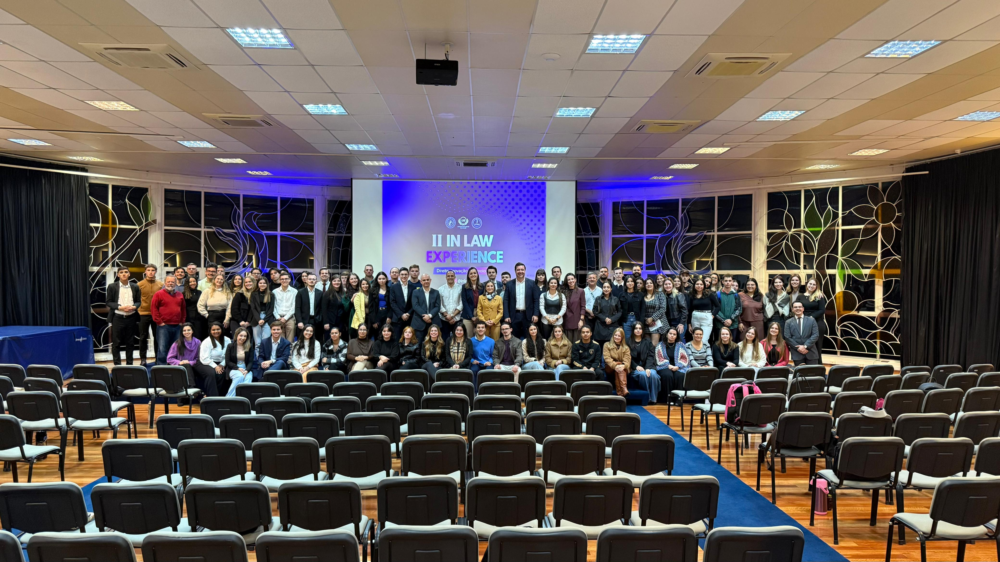
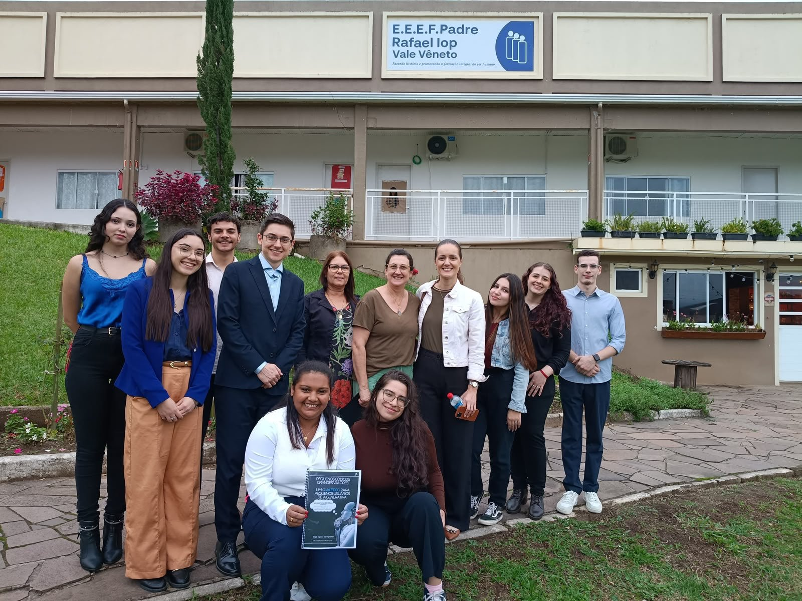

O InLaw é o Laboratório de Inovação e Direito da Antonio Meneghetti Faculdade: um espaço de pesquisa, debate e prática para pensar o Direito a partir de novas ideias, tecnologias e pessoas.
Sobre o InLaw
Criado em 2023 no curso de Direito da AMF, o InLaw nasce para fomentar o pensamento crítico e a prática inovadora, aproximando a academia, o mercado e a sociedade.
Estudos e projetos que conectam o Direito à realidade contemporânea.
Aproximamos estudantes, professores, profissionais e instituições.
Espaços para a prática, o debate e a inovação jurídica.
O que fazemos
Encontros de estudo, debates e pesquisas sobre inteligência artificial, proteção de dados, legal techs e as novas profissões do Direito. Aqui, ideias ganham forma e viram projetos.
Equipe
Coordenação docente e membros ativos do laboratório.
Coordenadora
Coordenador
Produção
Pesquisas e trabalhos desenvolvidos pelos membros do laboratório.
Evento do InLaw que reúne prática, inovação e tecnologia para quem quer ir além da teoria e entender o que está acontecendo no mercado jurídico. A segunda edição trouxe Cristiano Colombo e Gustavo Sudbrack ao Auditório Principal da AMF.

Manual de bom uso da Inteligência Artificial Generativa, produzido pelo InLaw com orientações práticas para usar a IA de forma ética e responsável.
Visitas a escolas da região para conversar com crianças e adolescentes sobre o uso ético e seguro da inteligência artificial, com o guia “Pequenos códigos, grandes valores”.

Blog
Profissões, temas e novidades do Direito e da tecnologia, explicados por quem está estudando.
Agenda
Palestras, encontros especiais e acontecimentos do laboratório.
Dias 29 e 30 de outubro.
Galeria
Momentos dos encontros e eventos do laboratório.
Carregando fotos…
Contato
Quer participar dos encontros ou enviar um texto para o blog? Fale com a gente pelo Instagram.
Área do professor